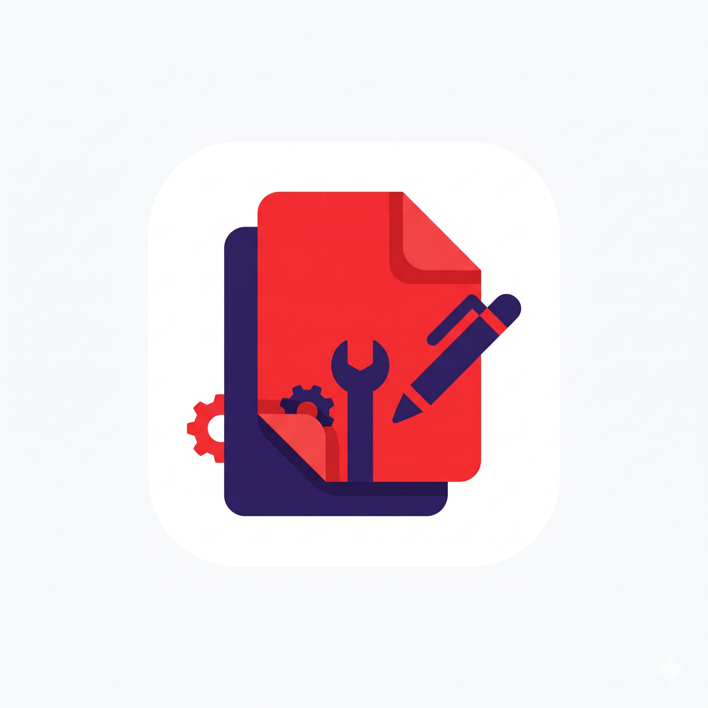

JPG to PDF
Drop images here, or browse
Supports JPG, PNG, WEBP, BMP
0 images selected

All in One PDF100% Free, secure, client-side execution. Your files never touch external servers.
Convert JPG, PNG, WEBP images to PDF with crop, rotate, and live preview.
Combine multiple PDF files into one unified document.
Extract specific page ranges (e.g. 1-3, 5) or separate document pages.
Rotate orientation of PDF pages 90°, 180°, or 270° permanently.
Stamp custom text watermarks across every page.
Supports JPG, PNG, WEBP, BMP
Select multiple PDF files to combine them into one document.
Click to choose multiple PDF files
Upload a PDF and select specific page ranges to extract.
Click to choose a PDF file
Permanently rotate all pages of your PDF document.
Click to choose a PDF file
Stamp a custom transparent watermark across every document page.
Click to choose a PDF file